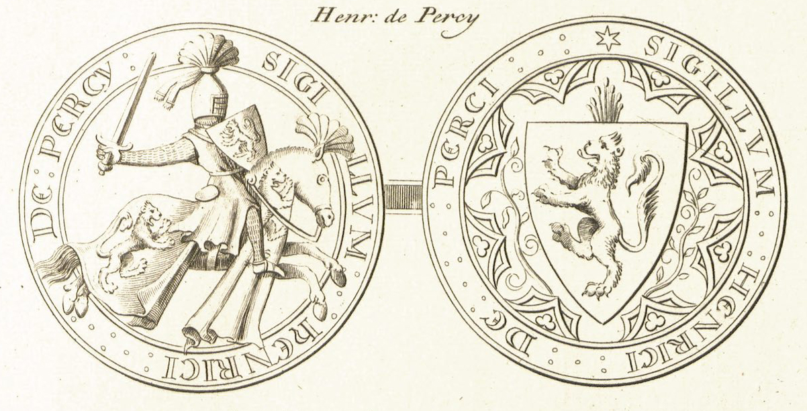

Medieval Seals after the Middle Ages
A conference on the history of the study, presentation, collection and organization of medieval seals, from the early modern period to the present day.
The Enduring Legacy of Medieval Seals
This hybrid event will take place in person at the University of Oxford and online, bringing together scholars to investigate how antiquarians, researchers, librarians, archivists and curators have organized, collected and studied medieval seals, from the early modern period to the present day.
Program
July 2 – July 3Thursday, July 2
Medieval Seals and Scholars in the Early Modern Period
Dr. John McEwan
University of Kansas
"Books of Seals in Seventeenth Century England"
Dr. Jean-François Nieus
University of Namur
"Seals in the 'Histoires généalogiques' by French antiquarian André Duchesne (1584–1640)"
Illustrating Medieval Seals in the 18th and 19th Centuries
Dr. Richard Allen
Magdalen College, Oxford
"Muniments, moulding, and Magdalen: a little-known 19th-century collection of seal facsimiles"
Dr. Chiara Betti
Society of Antiquaries
"Lines of Inquiry: A Preliminary Survey of Ancient Seal Illustrations"
Dr. Elizabeth New
Aberystwyth University
"19th Century Impressions. J.M.W. Turner and the illustration of medieval seals"
Making Medieval Seal Collections Accessible Today
Dr. Vanessa Wilkie
Huntington Libraries
"Medieval seals in the collections of the Huntington Library, California"
Dr. Charlotte May
University of Nottingham
"Medieval seals in the collection of the University of Nottingham"
Dr. Eve Wolynes
University of Kansas, Spencer Library
"Medieval seals in the collections of the University of Kansas, Spencer Library"
Friday, July 3
Medieval Seals and Scholars in France
Anna Mikhalchuk
École Nationale des Chartes
"The medieval seal in the perception of the French modern scholars (on the example of local histories)"
Dr. Caroline Simonet
Université de Caen Normandie
"Visual culture, onomastics and dating issues in French catalogues of seals"
Working with Early Modern Seal Descriptions
Dr. Maria do Rosário Morujão
Universidade de Coimbra
"Medieval Portuguese seals in the Early Modern Age: from descriptions to drawings"
Dr. Rachel Meredith Davis
University of the Highlands and Islands
"Women's seals from the late medieval period and their (mis)identifications in antiquarian seal catalogues"
Registration is open for both in-person attendance at the University of Oxford and virtual participation.
Register NowContact
For further information about the conference, please reach out using the form below.
Contact
University of Kansas
Institute for Digital Research in the Humanities
Watson Library